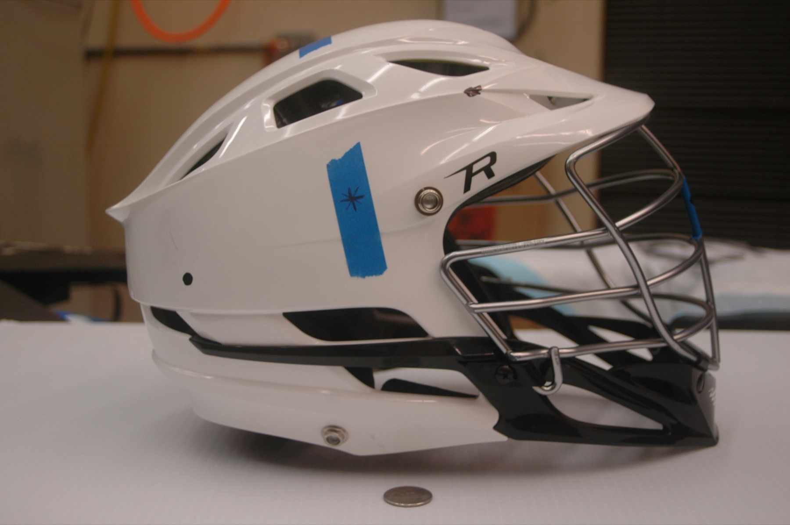
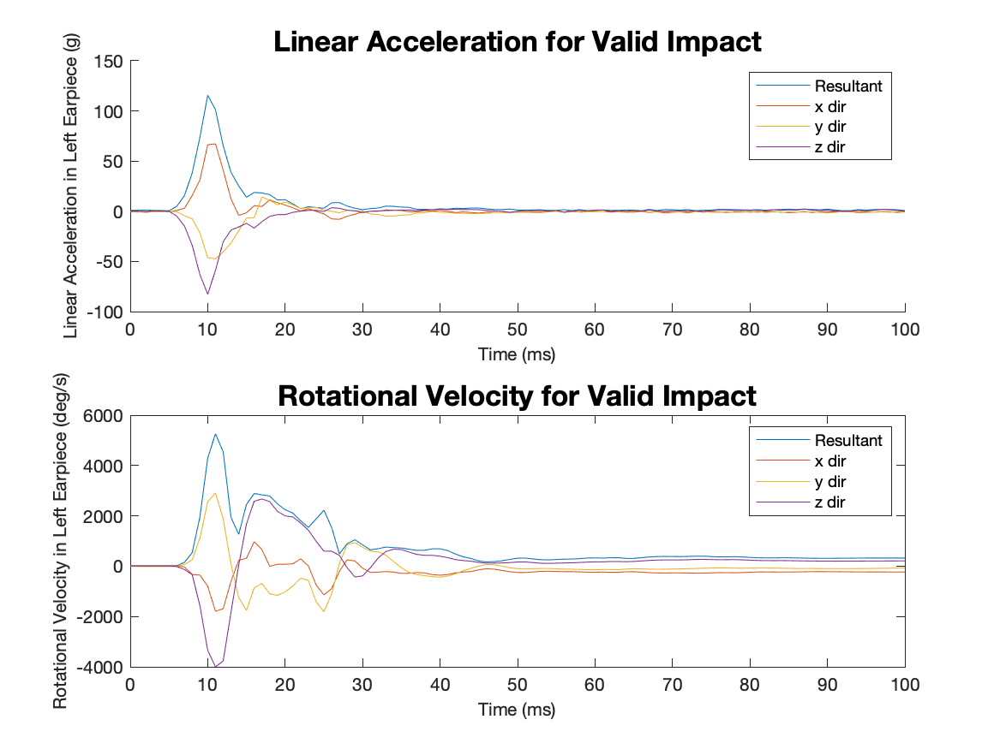
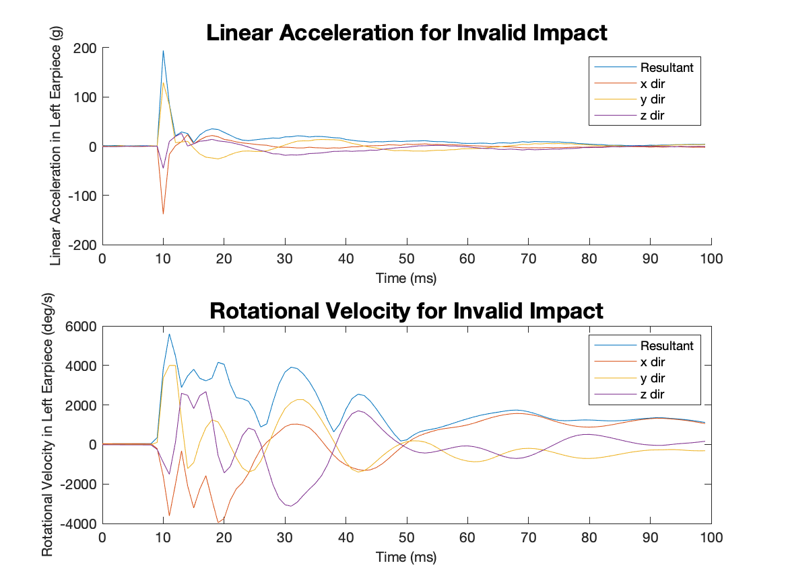
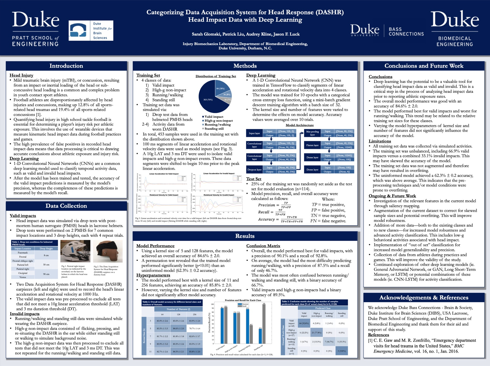
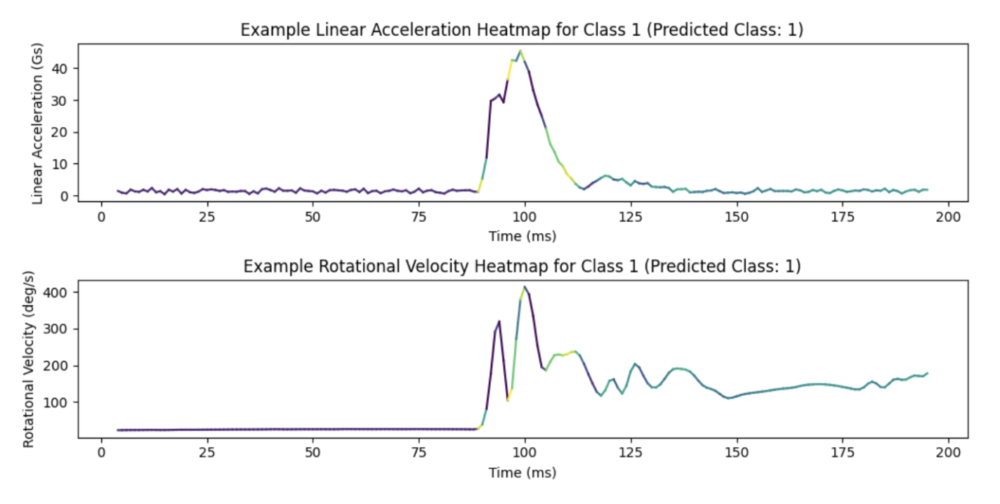
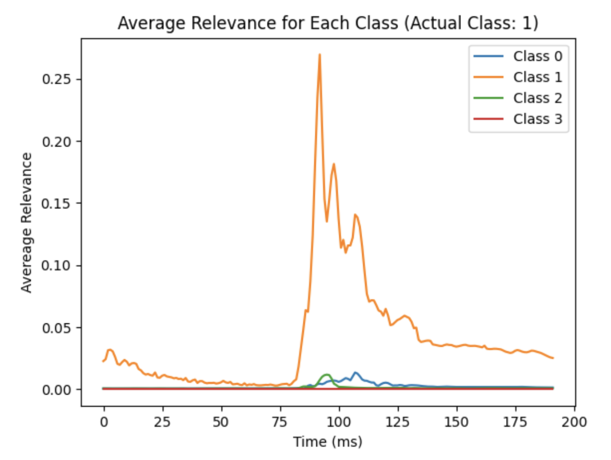

Harnessing AI to Track Concussions in Football
I joined Duke’s Injury Biomechanics Lab during my freshman year, which helped me gain exposure to the world of research. One of the main goals of our lab has been to characterize concussions in sports, especially football, since it has the highest prevalence of all contact sports. My lab developed a sensor called the DASHR, which can be placed inside a player’s ear canal to collect linear acceleration and rotational velocity data during activity, with the goal of using this data to learn more about concussion in sports.


By my sophomore year, my role in the lab had grown from working beneath a Ph.D. candidate to conducting my own research project. I saw a limitation with the reliability of the DASHR and other wearable sensors in the literature, where a large number of false positive “impacts” (which were actually caused by glitches or touching the device with a finger) were being detected and reported as head impacts. I began to develop a question I wanted to answer: could machine learning be used to categorize the activity data we were collecting so that only the true positive impacts were being reported?


Around the same time, large advances were starting to arise in the world of artificial intelligence. With ChatGPT revolutionizing the Internet in 2022, I saw the huge potential of machine learning in finding meaning in mass amounts of data, but had little to no experience with implementing it. Luckily, a student before me, Patrick Liu, had started working on just that. It took me a full semester to dig into his findings and teach myself the world of machine learning, but I came out the other side able to present his research at the annual Biomedical Engineering Society (BMES) Conference in Seattle, WA.

Next I was able to hit the ground running with my own research. I attended football practices at a local high school, where several of the players participated in our study and wore the DASHR for the duration of their practices. I observed their actions and carefully labeled their activities in a notepad so that my machine learning model would have accurate ground truth values to learn from.
I implemented an advanced visualization method (Gradient Class-Activated Mapping, or Grad-CAM) for opening the blackbox that is artificial intelligence. These heatmapped visualizations allowed me to see which features of the kinematic data the model was focusing on for each of its classification tasks. Example plots are shown below for a true positive condition, where the model performed well in recalling true head impacts 97.5% of the time.

